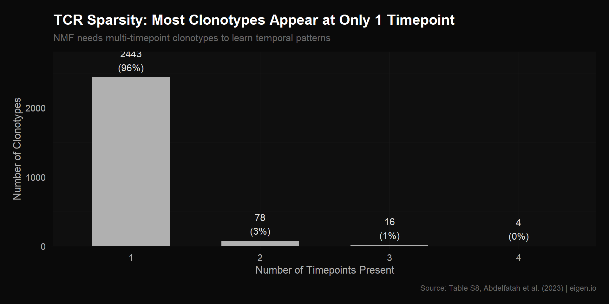
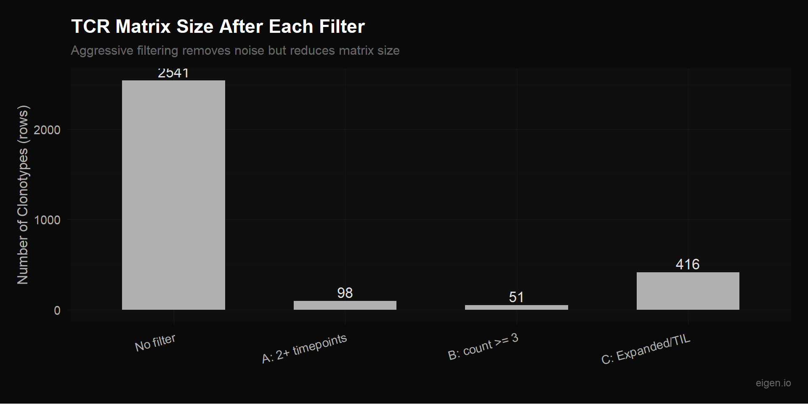
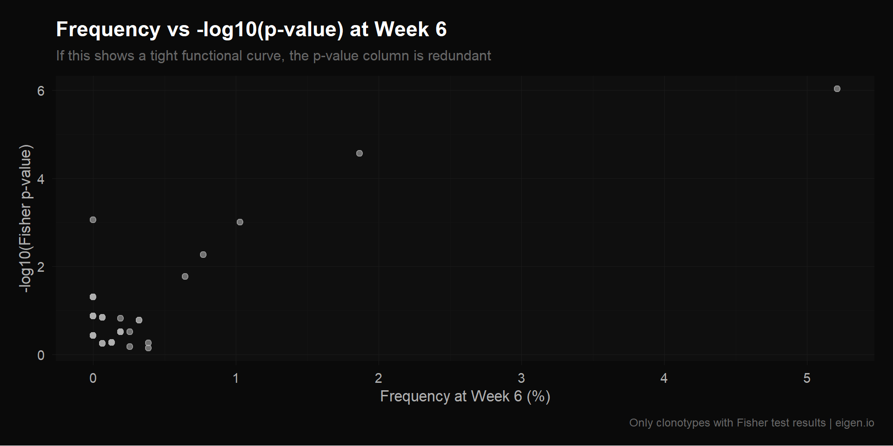
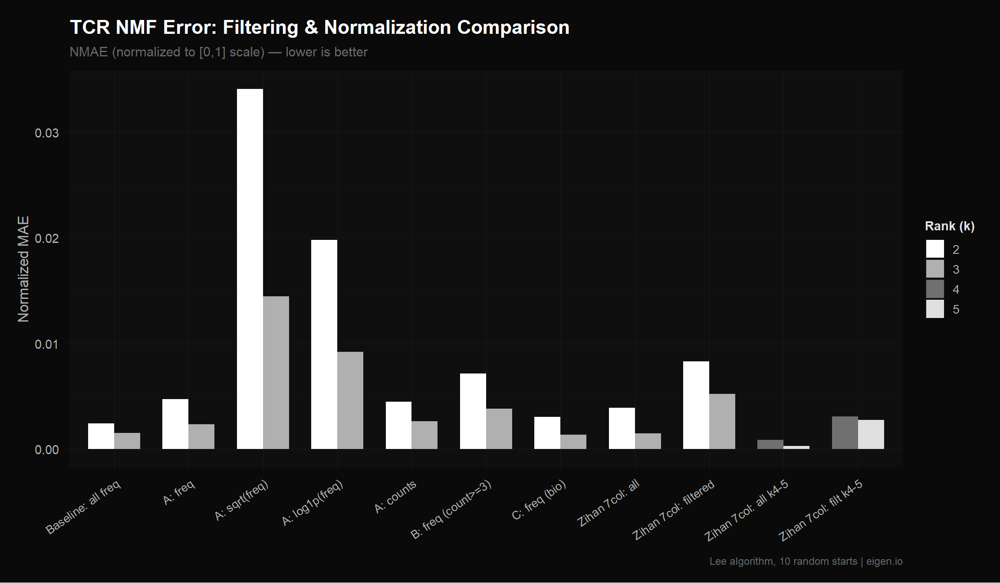
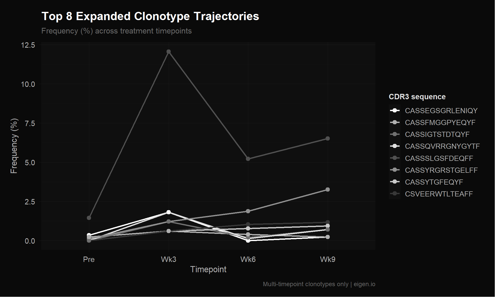

Code
library(NMF)
library(readxl)
library(ggplot2)
library(dplyr)
library(reshape2)
source("theme_donq.R")Filter noise clonotypes, test normalizations, export improved matrices for MEGPath
Ethan’s tcr_expansion.csv is a 2,541 × 4 matrix of clonotype frequencies across timepoints. Script 01 revealed a major structural issue: 96% of clonotypes appear in only 1 timepoint. These rows are mostly zeros with a single nonzero entry — NMF can’t learn any temporal pattern from them because there’s no trajectory to decompose.
This is different from the scRNA problem. With scRNA, we had too many genes (noise from housekeeping/undetected genes). With TCR, we have too many clonotypes that don’t have enough data to contribute meaningful signal. NMF is being asked to find temporal expansion patterns, but most clonotypes only exist at one timepoint, so there’s no expansion to find.
The supplementary Table S8 from Abdelfatah et al. (2023) is the source for the TCR matrix. It has richer information than the CSV:
We’ll rebuild from Table S8 directly so we have labels and metadata for interpretation.
Zihan built a 2,541 × 7 matrix: the 4 frequency columns from Table S8, plus 3 -log10(Fisher p-value) columns from Tables S9A/B/C (comparing each timepoint to pre-treatment), capped at 10. Her rationale: -log10 transforms spread out significance signal (p=0.001 → 3, p=10⁻⁹ → 9).
She then ran a proper rank selection (k=2 through k=6) with:
She also tried k-means clustering on the full 4-timepoint frequency vector (6 clusters) with standardization across timepoints.
This was rigorous work — proper rank selection with consensus clustering is exactly the right methodology. However, we have a concern about the p-value columns.
Fisher exact test p-values are deterministic functions of the count data that’s already captured in the frequency columns. Here’s why they’re almost certainly linear combinations:
The Fisher exact test for “is clonotype X expanded at week 6 vs pre-treatment?” takes as input: (count at pre, count at wk6, total cells at pre, total cells at wk6). The total cells per timepoint are constants (same for every clonotype: Pre=899, Wk3=166, Wk6=1556, Wk9=430). So the p-value is a function of only two variables: count_pre and count_wk6. But freq_pre and freq_wk6 are also functions of only those same two variables (freq = count / total). This means p_value = f(count_pre, count_wk6) = g(freq_pre, freq_wk6).
The -log10 transformation is monotonic, so -log10(p) is still a function of the same two frequencies. NMF is a linear factorization — it can only capture linear relationships between columns. If the p-values are nonlinear functions of the frequencies, NMF might treat them as partially independent, but the “new information” is just a nonlinear distortion of existing data, not genuinely new biological signal.
The risk: the 3 extra columns give NMF more room to fit noise (7 columns allows up to k=6 factors instead of k=3). If those columns are just nonlinear echoes of the frequency data, higher ranks will overfit rather than discover real structure.
We test this empirically below: run NMF on both 4-column and 7-column versions at the same ranks, plus higher ranks on the 7-column matrix, and compare NMAE.
Same as Script 02 — change one thing at a time, measure the impact:
library(NMF)
library(readxl)
library(ggplot2)
library(dplyr)
library(reshape2)
source("theme_donq.R")# Same function from Script 02
compute_errors <- function(mat, label, ranks = 2:3, nrun = 10) {
mat <- mat[rowSums(mat) > 0, , drop = FALSE]
mat <- pmax(mat, 0)
mat <- mat[rowSums(mat) > 0, , drop = FALSE]
results <- list()
for (k in ranks) {
fit <- nmf(mat, rank = k, method = "lee", seed = "random",
nrun = nrun, .opt = "vp2")
residual <- mat - fitted(fit)
frob <- sqrt(sum(residual^2))
lad <- sum(abs(residual))
n_elem <- length(residual)
mat_norm <- mat / max(mat)
fitted_norm <- fitted(fit) / max(mat)
lad_norm <- sum(abs(mat_norm - fitted_norm))
cat(sprintf("[%s] k=%d: LAD=%.2f, NMAE=%.6f, Frobenius=%.2f, Rows=%d\n",
label, k, lad, lad_norm / n_elem, frob, nrow(mat)))
results[[length(results) + 1]] <- data.frame(
label = label, rank = k,
frobenius = frob, lad = lad,
lad_norm = lad_norm,
nmae = lad_norm / n_elem,
n_rows = nrow(mat), n_elements = n_elem,
stringsAsFactors = FALSE
)
}
bind_rows(results)
}# Excel supplementary tables have 4 header rows (title, description, 2 blank)
# before the actual column names. skip = 4 confirmed via console inspection.
s8 <- read_excel("NMF Research Data/crc-22-0383-s01.xlsx", sheet = "Table S8", skip = 4)
cat("Table S8 dimensions:", nrow(s8), "x", ncol(s8), "\n")Table S8 dimensions: 2541 x 13 cat("Column names:\n")Column names:cat(paste(colnames(s8), collapse = "\n"), "\n")TCRB.clonotype
Pre-treatment
3 weeks
6 weeks
9 weeks
pre-treatment.freq
3 weeks.freq
6 weeks.freq
9 weeks.freq
Expanded
TIL.observed
TIL.counts
TIL.freq # Display first few rows and structure
cat("\n=== First 6 rows ===\n")
=== First 6 rows ===print(head(s8))# A tibble: 6 × 13
TCRB.clonotype `Pre-treatment` `3 weeks` `6 weeks` `9 weeks`
<chr> <dbl> <dbl> <dbl> <dbl>
1 CASSSLGSFDEQFF 13 20 81 28
2 CASSYRGRSTGELFF 1 2 29 14
3 CSVEERWTLTEAFF 0 1 16 5
4 CASSYTGFEQYF 0 1 12 4
5 CASSGRYEQYF 0 1 2 3
6 CASSIGTSTDTQYF 0 2 3 3
# ℹ 8 more variables: `pre-treatment.freq` <dbl>, `3 weeks.freq` <dbl>,
# `6 weeks.freq` <dbl>, `9 weeks.freq` <dbl>, Expanded <chr>,
# TIL.observed <chr>, TIL.counts <chr>, TIL.freq <chr>cat("\n=== Column types ===\n")
=== Column types ===str(s8)tibble [2,541 × 13] (S3: tbl_df/tbl/data.frame)
$ TCRB.clonotype : chr [1:2541] "CASSSLGSFDEQFF" "CASSYRGRSTGELFF" "CSVEERWTLTEAFF" "CASSYTGFEQYF" ...
$ Pre-treatment : num [1:2541] 13 1 0 0 0 0 0 0 0 0 ...
$ 3 weeks : num [1:2541] 20 2 1 1 1 2 0 3 0 0 ...
$ 6 weeks : num [1:2541] 81 29 16 12 2 3 2 2 5 1 ...
$ 9 weeks : num [1:2541] 28 14 5 4 3 3 3 3 3 2 ...
$ pre-treatment.freq: num [1:2541] 1.446 0.111 0 0 0 ...
$ 3 weeks.freq : num [1:2541] 12.048 1.205 0.602 0.602 0.602 ...
$ 6 weeks.freq : num [1:2541] 5.209 1.865 1.029 0.772 0.129 ...
$ 9 weeks.freq : num [1:2541] 6.512 3.256 1.163 0.93 0.698 ...
$ Expanded : chr [1:2541] "Expanded" "Expanded" "Expanded" "Expanded" ...
$ TIL.observed : chr [1:2541] "TIL.observed" "TIL.observed" "TIL.observed" "TIL.observed" ...
$ TIL.counts : chr [1:2541] "18.0" "23.0" "28.0" "5.0" ...
$ TIL.freq : chr [1:2541] "0.047498417" "0.060692421" "0.073886426" "0.013194005" ...cat("\n=== Summary Statistics ===\n")
=== Summary Statistics ===# Confirmed columns: TCRB.clonotype, Pre-treatment, 3 weeks, 6 weeks, 9 weeks,
# pre-treatment.freq, 3 weeks.freq, 6 weeks.freq, 9 weeks.freq,
# Expanded, TIL.observed, TIL.counts, TIL.freq
cols <- colnames(s8)
cat("All columns:", paste(cols, collapse = " | "), "\n\n")All columns: TCRB.clonotype | Pre-treatment | 3 weeks | 6 weeks | 9 weeks | pre-treatment.freq | 3 weeks.freq | 6 weeks.freq | 9 weeks.freq | Expanded | TIL.observed | TIL.counts | TIL.freq # Show ranges of numeric columns
for (col in cols) {
if (is.numeric(s8[[col]])) {
cat(sprintf(" %s: range [%.4f, %.4f], zeros: %d, NAs: %d\n",
col, min(s8[[col]], na.rm = TRUE), max(s8[[col]], na.rm = TRUE),
sum(s8[[col]] == 0, na.rm = TRUE), sum(is.na(s8[[col]]))))
} else {
cat(sprintf(" %s: %d unique values (character/factor)\n",
col, length(unique(s8[[col]]))))
}
} TCRB.clonotype: 2541 unique values (character/factor)
Pre-treatment: range [0.0000, 13.0000], zeros: 1714, NAs: 0
3 weeks: range [0.0000, 20.0000], zeros: 2403, NAs: 0
6 weeks: range [0.0000, 81.0000], zeros: 1205, NAs: 0
9 weeks: range [0.0000, 28.0000], zeros: 2179, NAs: 0
pre-treatment.freq: range [0.0000, 1.4461], zeros: 1714, NAs: 0
3 weeks.freq: range [0.0000, 12.0482], zeros: 2403, NAs: 0
6 weeks.freq: range [0.0000, 5.2090], zeros: 1205, NAs: 0
9 weeks.freq: range [0.0000, 6.5116], zeros: 2179, NAs: 0
Expanded: 2 unique values (character/factor)
TIL.observed: 2 unique values (character/factor)
TIL.counts: 54 unique values (character/factor)
TIL.freq: 54 unique values (character/factor)Verify we can rebuild tcr_expansion.csv from Table S8, just like we did for the scRNA matrix in Script 01. This confirms we understand the data provenance.
# Load Ethan's CSV for comparison
ethan_tcr <- as.matrix(read.csv("NMF Research Data/Data (scRNA, TCR)/tcr_expansion.csv",
header = FALSE))
colnames(ethan_tcr) <- c("Pre", "Wk3", "Wk6", "Wk9")
cat("Ethan's tcr_expansion.csv:", nrow(ethan_tcr), "x", ncol(ethan_tcr), "\n")Ethan's tcr_expansion.csv: 2541 x 4 cat("Range:", range(ethan_tcr), "\n")Range: 0 12.04819 cat("Column sums:", colSums(ethan_tcr), "\n")Column sums: 100 100 100 100 cat("(Should be ~100 per column if frequencies)\n")(Should be ~100 per column if frequencies)# Build frequency and count matrices using exact column names from Table S8
# Frequency matrix (what Ethan used in tcr_expansion.csv)
freq_cols <- c("pre-treatment.freq", "3 weeks.freq", "6 weeks.freq", "9 weeks.freq")
our_freq <- as.matrix(s8[, freq_cols])
our_freq[is.na(our_freq)] <- 0
colnames(our_freq) <- c("Pre", "Wk3", "Wk6", "Wk9")
# Count matrix (absolute cell counts per clonotype per timepoint)
count_cols <- c("Pre-treatment", "3 weeks", "6 weeks", "9 weeks")
count_mat <- as.matrix(s8[, count_cols])
count_mat[is.na(count_mat)] <- 0
colnames(count_mat) <- c("Pre", "Wk3", "Wk6", "Wk9")
cat(sprintf("Frequency matrix: %d x %d, range [%.4f, %.4f]\n",
nrow(our_freq), ncol(our_freq), min(our_freq), max(our_freq)))Frequency matrix: 2541 x 4, range [0.0000, 12.0482]cat(sprintf("Column sums: %s (should be ~100 each)\n",
paste(round(colSums(our_freq), 2), collapse = ", ")))Column sums: 100, 100, 100, 100 (should be ~100 each)cat(sprintf("\nCount matrix: %d x %d, range [%.0f, %.0f]\n",
nrow(count_mat), ncol(count_mat), min(count_mat), max(count_mat)))
Count matrix: 2541 x 4, range [0, 81]# Compare our frequency matrix from Table S8 to Ethan's CSV
cat("Our frequency matrix:", nrow(our_freq), "x", ncol(our_freq), "\n")Our frequency matrix: 2541 x 4 cat("Range:", range(our_freq), "\n")Range: 0 12.04819 cat("Column sums:", colSums(our_freq), "\n\n")Column sums: 100 100 100 100 max_diff <- max(abs(our_freq - ethan_tcr))
cat(sprintf("Max difference vs Ethan's CSV: %.2e\n", max_diff))Max difference vs Ethan's CSV: 0.00e+00if (max_diff < 1e-6) {
cat("MATCH CONFIRMED — our Table S8 extraction matches Ethan's CSV exactly.\n")
} else {
cat("MISMATCH — investigating...\n")
cat("First row ours:", our_freq[1, ], "\n")
cat("First row Ethan:", ethan_tcr[1, ], "\n")
}MATCH CONFIRMED — our Table S8 extraction matches Ethan's CSV exactly.This is the core issue with the TCR matrix. Most clonotypes appear at only one timepoint, giving NMF rows that are mostly zeros. NMF can’t learn a temporal trajectory from a single data point.
# Use our frequency matrix (or Ethan's if match failed)
freq_mat <- our_freq
# How many timepoints does each clonotype appear in?
n_timepoints <- rowSums(freq_mat > 0)
tp_table <- table(n_timepoints)
cat("=== Clonotype Presence Across Timepoints ===\n\n")=== Clonotype Presence Across Timepoints ===for (i in 1:4) {
n <- sum(n_timepoints == i)
pct <- 100 * n / length(n_timepoints)
cat(sprintf(" Present in %d timepoint(s): %d clonotypes (%.1f%%)\n", i, n, pct))
} Present in 1 timepoint(s): 2443 clonotypes (96.1%)
Present in 2 timepoint(s): 78 clonotypes (3.1%)
Present in 3 timepoint(s): 16 clonotypes (0.6%)
Present in 4 timepoint(s): 4 clonotypes (0.2%)cat(sprintf("\nTotal: %d clonotypes\n", length(n_timepoints)))
Total: 2541 clonotypescat(sprintf("Single-timepoint (uninformative for NMF): %d (%.1f%%)\n",
sum(n_timepoints == 1), 100 * sum(n_timepoints == 1) / length(n_timepoints)))Single-timepoint (uninformative for NMF): 2443 (96.1%)cat(sprintf("Multi-timepoint (informative): %d (%.1f%%)\n",
sum(n_timepoints >= 2), 100 * sum(n_timepoints >= 2) / length(n_timepoints)))Multi-timepoint (informative): 98 (3.9%)tp_df <- data.frame(
timepoints = factor(1:4),
count = as.numeric(tp_table)
)
p_sparsity <- ggplot(tp_df, aes(x = timepoints, y = count)) +
geom_col(fill = "#b0b0b0", width = 0.6) +
geom_text(aes(label = sprintf("%d\n(%.0f%%)", count, 100 * count / sum(count))),
vjust = -0.3, color = "#e0e0e0", size = 4) +
scale_y_continuous(expand = expansion(mult = c(0, 0.15))) +
theme_donq() +
labs(
title = "TCR Sparsity: Most Clonotypes Appear at Only 1 Timepoint",
subtitle = "NMF needs multi-timepoint clonotypes to learn temporal patterns",
x = "Number of Timepoints Present",
y = "Number of Clonotypes",
caption = "Source: Table S8, Abdelfatah et al. (2023) | eigen.io"
)
p_sparsity
save_donq(p_sparsity, "03_tcr_sparsity.png", width = 10, height = 5)# Which timepoints do single-timepoint clonotypes belong to?
single_tp <- freq_mat[n_timepoints == 1, ]
single_which <- apply(single_tp, 1, which.max)
single_table <- table(colnames(freq_mat)[single_which])
cat("=== Single-Timepoint Clonotypes by Timepoint ===\n")=== Single-Timepoint Clonotypes by Timepoint ===print(single_table)
Pre Wk3 Wk6 Wk9
765 112 1252 314 cat("\nThis reflects the sampling depth at each timepoint.\n")
This reflects the sampling depth at each timepoint.cat("Pre has the most cells (1,861) so the most unique clonotypes.\n")Pre has the most cells (1,861) so the most unique clonotypes.We test three filtering approaches, from most aggressive to least:
Only keep clonotypes observed at 2 or more timepoints. These are the only clonotypes where NMF can learn a temporal pattern. Aggressive — loses most rows.
Keep clonotypes with at least 3 total cells. Less aggressive than Filter A — includes some single-timepoint clonotypes if they have enough cells to be reliable.
Keep only clonotypes marked as “Expanded” or “TIL.observed” in Table S8. These are the biologically interesting ones — the rest are background repertoire noise.
# Filter A: 2+ timepoints
filter_a <- freq_mat[n_timepoints >= 2, ]
cat("=== Filter A: Multi-timepoint (2+ timepoints) ===\n")=== Filter A: Multi-timepoint (2+ timepoints) ===cat(sprintf("Rows: %d (%.1f%% of original)\n", nrow(filter_a),
100 * nrow(filter_a) / nrow(freq_mat)))Rows: 98 (3.9% of original)cat("Timepoint distribution:", table(rowSums(filter_a > 0)), "\n")Timepoint distribution: 78 16 4 # Filter B: Total count >= 3
total_counts <- rowSums(count_mat)
filter_b <- freq_mat[total_counts >= 3, ]
count_b <- count_mat[total_counts >= 3, ]
cat("=== Filter B: Total count >= 3 ===\n")=== Filter B: Total count >= 3 ===cat(sprintf("Rows: %d (%.1f%% of original)\n", nrow(filter_b),
100 * nrow(filter_b) / nrow(freq_mat)))Rows: 51 (2.0% of original)cat("Total count distribution of kept clonotypes:\n")Total count distribution of kept clonotypes:print(summary(total_counts[total_counts >= 3])) Min. 1st Qu. Median Mean 3rd Qu. Max.
3.000 3.000 3.000 8.706 7.000 142.000 # Filter C: Expanded or TIL-observed
# Column values are "Expanded" / "TIL.observed" or NA
is_expanded <- !is.na(s8[["Expanded"]]) & s8[["Expanded"]] == "Expanded"
is_til <- !is.na(s8[["TIL.observed"]]) & s8[["TIL.observed"]] == "TIL.observed"
cat(sprintf("Expanded clonotypes: %d\n", sum(is_expanded)))Expanded clonotypes: 9cat(sprintf("TIL-observed clonotypes: %d\n", sum(is_til)))TIL-observed clonotypes: 415cat(sprintf("Either (union): %d\n", sum(is_expanded | is_til)))Either (union): 416cat(sprintf("Both (intersection): %d\n", sum(is_expanded & is_til)))Both (intersection): 8filter_c <- freq_mat[is_expanded | is_til, ]
cat(sprintf("\n=== Filter C: Expanded or TIL-observed ===\n"))
=== Filter C: Expanded or TIL-observed ===cat(sprintf("Rows: %d (%.1f%% of original)\n", nrow(filter_c),
100 * nrow(filter_c) / nrow(freq_mat)))Rows: 416 (16.4% of original)# How many of these are multi-timepoint?
fc_tp <- rowSums(filter_c > 0)
cat(sprintf("Of these, multi-timepoint: %d (%.1f%%)\n",
sum(fc_tp >= 2), 100 * sum(fc_tp >= 2) / nrow(filter_c)))Of these, multi-timepoint: 62 (14.9%)filter_sizes <- data.frame(
filter = c("No filter", "A: 2+ timepoints", "B: count >= 3", "C: Expanded/TIL"),
rows = c(nrow(freq_mat), nrow(filter_a), nrow(filter_b), nrow(filter_c))
)
filter_sizes$filter <- factor(filter_sizes$filter, levels = filter_sizes$filter)
p_filters <- ggplot(filter_sizes, aes(x = filter, y = rows)) +
geom_col(fill = "#b0b0b0", width = 0.6) +
geom_text(aes(label = rows), vjust = -0.3, color = "#e0e0e0", size = 4.5) +
theme_donq() +
theme(axis.text.x = element_text(angle = 15, hjust = 1)) +
labs(
title = "TCR Matrix Size After Each Filter",
subtitle = "Aggressive filtering removes noise but reduces matrix size",
x = NULL,
y = "Number of Clonotypes (rows)",
caption = "eigen.io"
)
p_filters
save_donq(p_filters, "03_tcr_filter_sizes.png", width = 10, height = 5)For each filtered matrix, we test different normalizations. The question: should we give MEGPath frequencies (sum to 100 per timepoint), raw counts, or some transformation?
Frequencies (what Ethan used): Each column sums to ~100. Good because it accounts for different sampling depths across timepoints (Pre has 1,861 cells, Wk3 only 223). But the scale is very small — most values are <0.1%.
Raw counts: Integer number of cells per clonotype per timepoint. Doesn’t account for sampling depth — a clonotype with 5 cells at Wk3 (out of 223) is more impressive than 5 cells at Pre (out of 1,861). But counts may be more natural for NMF.
Sqrt-transformed frequencies: sqrt(freq) compresses the range while preserving relative differences. Common in ecology for species abundance data.
Log-transformed frequencies: log1p(freq) compresses even more aggressively. Risk: same double-log issue as scRNA if not careful about what we’re logging.
# Use Filter A (multi-timepoint) as the test case — it's the cleanest for NMF
test_mat <- filter_a
cat(sprintf("Testing normalizations on Filter A: %d clonotypes x 4 timepoints\n\n",
nrow(test_mat)))Testing normalizations on Filter A: 98 clonotypes x 4 timepoints# 1. Frequencies as-is (Ethan's approach for this subset)
norm_freq <- test_mat
cat("Frequencies: range", range(norm_freq), "\n")Frequencies: range 0 12.04819 # 2. Sqrt-transformed frequencies
norm_sqrt <- sqrt(test_mat)
cat("Sqrt(freq): range", range(norm_sqrt), "\n")Sqrt(freq): range 0 3.471051 # 3. Log-transformed frequencies
norm_log <- log1p(test_mat)
cat("Log1p(freq): range", range(norm_log), "\n")Log1p(freq): range 0 2.56865 # 4. Raw counts
count_a <- count_mat[n_timepoints >= 2, ]
cat("Raw counts: range", range(count_a), "\n")Raw counts: range 0 81 cat("Count row sums: range", range(rowSums(count_a)), "\n")Count row sums: range 2 142 Zihan added 3 columns to the 4 frequency columns: -log10(Fisher p-value) from Tables S9A (Pre vs 3wk), S9B (Pre vs 6wk), and S9C (Pre vs 9wk), capped at 10.
With 7 columns instead of 4, the max meaningful NMF rank increases from k=3 to k=6. Zihan selected k=5 using cophenetic correlation, dispersion, and RSS — a proper rank selection methodology.
The question: do the p-value columns add real information, or are they redundant with the frequency columns? We test this by running NMF on both the 4-column and 7-column versions and comparing errors. If the p-value columns help, the 7-column matrix should have lower NMAE at the same rank, and higher ranks (k=4,5) should improve further.
# Load Tables S9A, S9B, S9C — same skip = 4 as S8
# Columns: Sequence, Pre-treatment (n), X weeks (n), Pre-treatment fraction,
# X weeks fraction, Pre-treatment_neg, X weeks_neg, fisher, Diff
s9a <- read_excel("NMF Research Data/crc-22-0383-s01.xlsx", sheet = "Table S9A", skip = 4)
s9b <- read_excel("NMF Research Data/crc-22-0383-s01.xlsx", sheet = "Table S9B", skip = 4)
s9c <- read_excel("NMF Research Data/crc-22-0383-s01.xlsx", sheet = "Table S9C", skip = 4)
cat("S9A (Pre vs 3wk):", nrow(s9a), "x", ncol(s9a), "\n")S9A (Pre vs 3wk): 955 x 9 cat("S9B (Pre vs 6wk):", nrow(s9b), "x", ncol(s9b), "\n")S9B (Pre vs 6wk): 2115 x 9 cat("S9C (Pre vs 9wk):", nrow(s9c), "x", ncol(s9c), "\n")S9C (Pre vs 9wk): 1167 x 9 # S8 CDR3 column: "TCRB.clonotype"
# S9 CDR3 column: "Sequence"
# S9 p-value column: "fisher"
cdr3_vec <- s8[["TCRB.clonotype"]]
cat("First 3 CDR3 sequences:", paste(head(cdr3_vec, 3), collapse = ", "), "\n")First 3 CDR3 sequences: CASSSLGSFDEQFF, CASSYRGRSTGELFF, CSVEERWTLTEAFF # Build CDR3 → Fisher p-value lookups from each S9 table
p_3wk <- setNames(as.numeric(s9a[["fisher"]]), s9a[["Sequence"]])
p_6wk <- setNames(as.numeric(s9b[["fisher"]]), s9b[["Sequence"]])
p_9wk <- setNames(as.numeric(s9c[["fisher"]]), s9c[["Sequence"]])
cat(sprintf("S9A: %d clonotypes with Fisher p-values\n", length(p_3wk)))S9A: 955 clonotypes with Fisher p-valuescat(sprintf("S9B: %d clonotypes with Fisher p-values\n", length(p_6wk)))S9B: 2115 clonotypes with Fisher p-valuescat(sprintf("S9C: %d clonotypes with Fisher p-values\n", length(p_9wk)))S9C: 1167 clonotypes with Fisher p-values# Build -log10(p) columns, matched to S8 clonotype order
neglog_3wk <- -log10(pmax(p_3wk[cdr3_vec], 1e-10))
neglog_6wk <- -log10(pmax(p_6wk[cdr3_vec], 1e-10))
neglog_9wk <- -log10(pmax(p_9wk[cdr3_vec], 1e-10))
# Clonotypes not in S9 tables (not tested) → 0
neglog_3wk[is.na(neglog_3wk)] <- 0
neglog_6wk[is.na(neglog_6wk)] <- 0
neglog_9wk[is.na(neglog_9wk)] <- 0
# Cap at 10 (as Zihan did)
neglog_3wk <- pmin(neglog_3wk, 10)
neglog_6wk <- pmin(neglog_6wk, 10)
neglog_9wk <- pmin(neglog_9wk, 10)
# Build 7-column matrix
zihan_mat <- cbind(freq_mat,
neglog_p_3wk = neglog_3wk,
neglog_p_6wk = neglog_6wk,
neglog_p_9wk = neglog_9wk)
cat(sprintf("\nZihan's 7-column matrix: %d x %d\n", nrow(zihan_mat), ncol(zihan_mat)))
Zihan's 7-column matrix: 2541 x 7cat("Column ranges:\n")Column ranges:for (j in 1:ncol(zihan_mat)) {
cat(sprintf(" %s: [%.4f, %.4f]\n", colnames(zihan_mat)[j],
min(zihan_mat[,j]), max(zihan_mat[,j])))
} Pre: [0.0000, 1.4461]
Wk3: [0.0000, 12.0482]
Wk6: [0.0000, 5.2090]
Wk9: [0.0000, 6.5116]
neglog_p_3wk: [0.0000, 8.6353]
neglog_p_6wk: [-0.0000, 6.0251]
neglog_p_9wk: [-0.0000, 5.8997]# Filtered version (multi-timepoint only)
zihan_filtered <- zihan_mat[n_timepoints >= 2, ]
cat(sprintf("\nFiltered (multi-timepoint): %d x %d\n",
nrow(zihan_filtered), ncol(zihan_filtered)))
Filtered (multi-timepoint): 98 x 7Before running NMF, we can directly measure how much new information the p-value columns carry. If -log10(p_6wk) can be predicted from freq_pre and freq_6wk with high accuracy, it’s redundant. We test this with R² from linear regression: if R² ≈ 1, the p-value column is a (near-)linear function of existing columns and adds no new information for a linear factorization like NMF.
We also compute the correlation matrix between all 7 columns. High correlations between p-value columns and frequency columns confirm redundancy.
cat("=== Test: How predictable are p-value columns from frequency columns? ===\n\n")=== Test: How predictable are p-value columns from frequency columns? ===# For each p-value column, regress it on the frequency columns
freq_only <- zihan_mat[, 1:4]
p_cols <- zihan_mat[, 5:7]
for (j in 1:3) {
p_name <- colnames(p_cols)[j]
nonzero <- p_cols[, j] > 0
if (sum(nonzero) > 10) {
fit <- lm(p_cols[nonzero, j] ~ freq_only[nonzero, ])
r2 <- summary(fit)$r.squared
cat(sprintf(" %s ~ freq columns: R² = %.4f (n=%d)\n", p_name, r2, sum(nonzero)))
} else {
cat(sprintf(" %s: too few nonzero values (%d) to test\n", p_name, sum(nonzero)))
}
} neglog_p_3wk ~ freq columns: R² = 0.9817 (n=139)
neglog_p_6wk ~ freq columns: R² = 0.7873 (n=839)
neglog_p_9wk ~ freq columns: R² = 0.9311 (n=367)cat("\nR² close to 1.0 = the p-value column is almost entirely explained by the\n")
R² close to 1.0 = the p-value column is almost entirely explained by thecat("frequency columns. NMF gains no new information from it.\n")frequency columns. NMF gains no new information from it.cat("\n=== Correlation Matrix (all 7 columns) ===\n\n")
=== Correlation Matrix (all 7 columns) ===has_pval <- rowSums(p_cols) > 0
if (sum(has_pval) > 20) {
cor_mat <- cor(zihan_mat[has_pval, ], use = "complete.obs")
} else {
cat("Note: few rows with p-values, correlations may be noisy.\n")
cor_mat <- cor(zihan_mat, use = "complete.obs")
}
print(round(cor_mat, 3)) Pre Wk3 Wk6 Wk9 neglog_p_3wk neglog_p_6wk neglog_p_9wk
Pre 1.000 0.284 0.421 0.143 0.124 0.814 -0.111
Wk3 0.284 1.000 0.807 0.670 0.955 0.337 0.408
Wk6 0.421 0.807 1.000 0.855 0.653 0.618 0.630
Wk9 0.143 0.670 0.855 1.000 0.524 0.329 0.913
neglog_p_3wk 0.124 0.955 0.653 0.524 1.000 0.200 0.318
neglog_p_6wk 0.814 0.337 0.618 0.329 0.200 1.000 0.163
neglog_p_9wk -0.111 0.408 0.630 0.913 0.318 0.163 1.000# Scatter: freq_6wk vs neglog_p_6wk to visualize the functional relationship
# Use 6wk since it has the most expanded clonotypes (S9B: 2118 rows)
has_6wk_p <- zihan_mat[, "neglog_p_6wk"] > 0
scatter_df <- data.frame(
freq_6wk = zihan_mat[has_6wk_p, "Wk6"],
neglog_p = zihan_mat[has_6wk_p, "neglog_p_6wk"]
)
p_scatter <- ggplot(scatter_df, aes(x = freq_6wk, y = neglog_p)) +
geom_point(color = "#b0b0b0", alpha = 0.6, size = 2) +
theme_donq() +
labs(
title = "Frequency vs -log10(p-value) at Week 6",
subtitle = "If this shows a tight functional curve, the p-value column is redundant",
x = "Frequency at Week 6 (%)",
y = "-log10(Fisher p-value)",
caption = "Only clonotypes with Fisher test results | eigen.io"
)
p_scatter
save_donq(p_scatter, "03_freq_vs_pvalue.png", width = 10, height = 5)Now the empirical test. We run NMF on the same clonotypes with 4 columns (frequencies only) vs 7 columns (frequencies + p-values) at the same ranks. If theory is correct:
cat("=== NMF: 4-column vs 7-column comparison ===\n\n")=== NMF: 4-column vs 7-column comparison ===cat("--- Unfiltered (all 2541 clonotypes) ---\n")--- Unfiltered (all 2541 clonotypes) ---zihan_all_err <- compute_errors(zihan_mat, "Zihan 7col: all", ranks = 2:3)
Runs: |
Runs: | | 0%
Runs: |
Runs: |==================================================| 100%
System time:
user system elapsed
1.23 0.02 3.14
[Zihan 7col: all] k=2: LAD=840.35, NMAE=0.003921, Frobenius=13.23, Rows=2541
Runs: |
Runs: | | 0%
Runs: |
Runs: |==================================================| 100%
System time:
user system elapsed
1.37 0.00 3.39
[Zihan 7col: all] k=3: LAD=315.94, NMAE=0.001474, Frobenius=5.58, Rows=2541cat("\n--- Filtered (multi-timepoint) ---\n")
--- Filtered (multi-timepoint) ---zihan_filt_err <- compute_errors(zihan_filtered, "Zihan 7col: filtered", ranks = 2:3)
Runs: |
Runs: | | 0%
Runs: |
Runs: |==================================================| 100%
System time:
user system elapsed
1.20 0.03 2.86
[Zihan 7col: filtered] k=2: LAD=68.64, NMAE=0.008305, Frobenius=4.25, Rows=98
Runs: |
Runs: | | 0%
Runs: |
Runs: |==================================================| 100%
System time:
user system elapsed
1.27 0.01 3.01
[Zihan 7col: filtered] k=3: LAD=43.17, NMAE=0.005223, Frobenius=2.91, Rows=98cat("\n--- Higher ranks on 7-column (k=4,5) ---\n")
--- Higher ranks on 7-column (k=4,5) ---zihan_highk_err <- compute_errors(zihan_mat, "Zihan 7col: all k4-5", ranks = 4:5)
Runs: |
Runs: | | 0%
Runs: |
Runs: |==================================================| 100%
System time:
user system elapsed
1.21 0.02 3.48
[Zihan 7col: all k4-5] k=4: LAD=182.44, NMAE=0.000851, Frobenius=3.07, Rows=2541
Runs: |
Runs: | | 0%
Runs: |
Runs: |==================================================| 100%
System time:
user system elapsed
1.24 0.00 3.73
[Zihan 7col: all k4-5] k=5: LAD=59.34, NMAE=0.000277, Frobenius=1.94, Rows=2541zihan_filt_highk_err <- compute_errors(zihan_filtered, "Zihan 7col: filt k4-5", ranks = 4:5)
Runs: |
Runs: | | 0%
Runs: |
Runs: |==================================================| 100%
System time:
user system elapsed
1.25 0.00 3.00
[Zihan 7col: filt k4-5] k=4: LAD=25.56, NMAE=0.003093, Frobenius=1.71, Rows=98
Runs: |
Runs: | | 0%
Runs: |
Runs: |==================================================| 100%
System time:
user system elapsed
1.25 0.00 3.03
[Zihan 7col: filt k4-5] k=5: LAD=22.71, NMAE=0.002747, Frobenius=1.35, Rows=98Run NMF on each filter × normalization combination and compare errors.
cat("=== Baseline: Ethan's full TCR matrix (unfiltered frequencies) ===\n\n")=== Baseline: Ethan's full TCR matrix (unfiltered frequencies) ===baseline_tcr <- compute_errors(freq_mat, "Baseline: all freq")
Runs: |
Runs: | | 0%
Runs: |
Runs: |==================================================| 100%
System time:
user system elapsed
1.20 0.02 3.06
[Baseline: all freq] k=2: LAD=298.40, NMAE=0.002437, Frobenius=4.86, Rows=2541
Runs: |
Runs: | | 0%
Runs: |
Runs: |==================================================| 100%
System time:
user system elapsed
1.24 0.00 3.34
[Baseline: all freq] k=3: LAD=186.99, NMAE=0.001527, Frobenius=3.18, Rows=2541cat("\n=== Filter A (multi-timepoint) × Normalizations ===\n\n")
=== Filter A (multi-timepoint) × Normalizations ===fa_freq_err <- compute_errors(norm_freq, "A: freq")
Runs: |
Runs: | | 0%
Runs: |
Runs: |==================================================| 100%
System time:
user system elapsed
1.23 0.00 2.91
[A: freq] k=2: LAD=22.25, NMAE=0.004712, Frobenius=1.74, Rows=98
Runs: |
Runs: | | 0%
Runs: |
Runs: |==================================================| 100%
System time:
user system elapsed
1.28 0.03 3.02
[A: freq] k=3: LAD=11.10, NMAE=0.002351, Frobenius=1.05, Rows=98fa_sqrt_err <- compute_errors(norm_sqrt, "A: sqrt(freq)")
Runs: |
Runs: | | 0%
Runs: |
Runs: |==================================================| 100%
System time:
user system elapsed
1.25 0.00 2.82
[A: sqrt(freq)] k=2: LAD=46.39, NMAE=0.034091, Frobenius=3.17, Rows=98
Runs: |
Runs: | | 0%
Runs: |
Runs: |==================================================| 100%
System time:
user system elapsed
1.27 0.00 2.83
[A: sqrt(freq)] k=3: LAD=19.68, NMAE=0.014462, Frobenius=1.60, Rows=98fa_log_err <- compute_errors(norm_log, "A: log1p(freq)")
Runs: |
Runs: | | 0%
Runs: |
Runs: |==================================================| 100%
System time:
user system elapsed
1.32 0.00 3.44
[A: log1p(freq)] k=2: LAD=19.94, NMAE=0.019808, Frobenius=1.49, Rows=98
Runs: |
Runs: | | 0%
Runs: |
Runs: |==================================================| 100%
System time:
user system elapsed
1.30 0.00 3.29
[A: log1p(freq)] k=3: LAD=9.29, NMAE=0.009222, Frobenius=0.84, Rows=98fa_count_err <- compute_errors(count_a, "A: counts")
Runs: |
Runs: | | 0%
Runs: |
Runs: |==================================================| 100%
System time:
user system elapsed
1.28 0.01 3.42
[A: counts] k=2: LAD=143.00, NMAE=0.004504, Frobenius=11.41, Rows=98
Runs: |
Runs: | | 0%
Runs: |
Runs: |==================================================| 100%
System time:
user system elapsed
1.43 0.00 3.43
[A: counts] k=3: LAD=83.16, NMAE=0.002619, Frobenius=8.12, Rows=98cat("\n=== Filter B (count >= 3) × Frequencies ===\n\n")
=== Filter B (count >= 3) × Frequencies ===fb_freq_err <- compute_errors(filter_b, "B: freq (count>=3)")
Runs: |
Runs: | | 0%
Runs: |
Runs: |==================================================| 100%
System time:
user system elapsed
1.25 0.00 3.18
[B: freq (count>=3)] k=2: LAD=17.53, NMAE=0.007134, Frobenius=1.97, Rows=51
Runs: |
Runs: | | 0%
Runs: |
Runs: |==================================================| 100%
System time:
user system elapsed
1.28 0.00 3.37
[B: freq (count>=3)] k=3: LAD=9.37, NMAE=0.003811, Frobenius=1.17, Rows=51cat("\n=== Filter C (Expanded/TIL) × Frequencies ===\n\n")
=== Filter C (Expanded/TIL) × Frequencies ===fc_freq_err <- compute_errors(filter_c, "C: freq (bio)")
Runs: |
Runs: | | 0%
Runs: |
Runs: |==================================================| 100%
System time:
user system elapsed
1.31 0.05 3.42
[C: freq (bio)] k=2: LAD=61.34, NMAE=0.003060, Frobenius=2.70, Rows=416
Runs: |
Runs: | | 0%
Runs: |
Runs: |==================================================| 100%
System time:
user system elapsed
1.36 0.01 3.56
[C: freq (bio)] k=3: LAD=27.31, NMAE=0.001362, Frobenius=1.47, Rows=416all_tcr_errors <- bind_rows(
baseline_tcr,
fa_freq_err,
fa_sqrt_err,
fa_log_err,
fa_count_err,
fb_freq_err,
fc_freq_err,
zihan_all_err,
zihan_filt_err,
zihan_highk_err,
zihan_filt_highk_err
)
cat("=== All TCR Error Comparisons ===\n\n")=== All TCR Error Comparisons ===cat("Sorted by NMAE (normalized, scale-independent):\n\n")Sorted by NMAE (normalized, scale-independent):all_tcr_errors |>
arrange(rank, nmae) |>
select(label, rank, n_rows, lad, nmae) |>
as.data.frame() |>
print() label rank n_rows lad nmae
1 Baseline: all freq 2 2541 298.401088 0.0024367661
2 C: freq (bio) 2 416 61.337593 0.0030595073
3 Zihan 7col: all 2 2541 840.354665 0.0039213716
4 A: counts 2 98 143.002621 0.0045037358
5 A: freq 2 98 22.253107 0.0047117548
6 B: freq (count>=3) 2 51 17.533011 0.0071335290
7 Zihan 7col: filtered 2 98 68.637289 0.0083045116
8 A: log1p(freq) 2 98 19.944772 0.0198078862
9 A: sqrt(freq) 2 98 46.386133 0.0340911101
10 C: freq (bio) 3 416 27.308655 0.0013621505
11 Zihan 7col: all 3 2541 315.935275 0.0014742580
12 Baseline: all freq 3 2541 186.991081 0.0015269834
13 A: freq 3 98 11.101863 0.0023506496
14 A: counts 3 98 83.158264 0.0026189930
15 B: freq (count>=3) 3 51 9.367917 0.0038114564
16 Zihan 7col: filtered 3 98 43.168659 0.0052230302
17 A: log1p(freq) 3 98 9.285943 0.0092222117
18 A: sqrt(freq) 3 98 19.677777 0.0144620216
19 Zihan 7col: all k4-5 4 2541 182.444357 0.0008513455
20 Zihan 7col: filt k4-5 4 98 25.560935 0.0030926496
21 Zihan 7col: all k4-5 5 2541 59.337945 0.0002768904
22 Zihan 7col: filt k4-5 5 98 22.706497 0.0027472875cat("\n=== Improvement vs Ethan's Baseline ===\n\n")
=== Improvement vs Ethan's Baseline ===for (k in 2:3) {
bl <- baseline_tcr |> filter(rank == k)
improved <- all_tcr_errors |>
filter(label != "Baseline: all freq", rank == k) |>
arrange(nmae)
cat(sprintf("--- Rank k=%d (baseline NMAE: %.6f) ---\n", k, bl$nmae[1]))
for (i in 1:nrow(improved)) {
pct <- 100 * (bl$nmae[1] - improved$nmae[i]) / bl$nmae[1]
cat(sprintf(" %s: NMAE=%.6f (%+.1f%%, %d rows)\n",
improved$label[i], improved$nmae[i], -pct, improved$n_rows[i]))
}
cat("\n")
}--- Rank k=2 (baseline NMAE: 0.002437) ---
C: freq (bio): NMAE=0.003060 (+25.6%, 416 rows)
Zihan 7col: all: NMAE=0.003921 (+60.9%, 2541 rows)
A: counts: NMAE=0.004504 (+84.8%, 98 rows)
A: freq: NMAE=0.004712 (+93.4%, 98 rows)
B: freq (count>=3): NMAE=0.007134 (+192.7%, 51 rows)
Zihan 7col: filtered: NMAE=0.008305 (+240.8%, 98 rows)
A: log1p(freq): NMAE=0.019808 (+712.9%, 98 rows)
A: sqrt(freq): NMAE=0.034091 (+1299.0%, 98 rows)
--- Rank k=3 (baseline NMAE: 0.001527) ---
C: freq (bio): NMAE=0.001362 (-10.8%, 416 rows)
Zihan 7col: all: NMAE=0.001474 (-3.5%, 2541 rows)
A: freq: NMAE=0.002351 (+53.9%, 98 rows)
A: counts: NMAE=0.002619 (+71.5%, 98 rows)
B: freq (count>=3): NMAE=0.003811 (+149.6%, 51 rows)
Zihan 7col: filtered: NMAE=0.005223 (+242.0%, 98 rows)
A: log1p(freq): NMAE=0.009222 (+503.9%, 98 rows)
A: sqrt(freq): NMAE=0.014462 (+847.1%, 98 rows)plot_tcr <- all_tcr_errors |>
mutate(label = factor(label, levels = unique(label)))
p_tcr <- ggplot(plot_tcr, aes(x = label, y = nmae, fill = factor(rank))) +
geom_col(position = "dodge", width = 0.7) +
scale_fill_donq() +
theme_donq() +
theme(axis.text.x = element_text(angle = 35, hjust = 1, size = 10)) +
labs(
title = "TCR NMF Error: Filtering & Normalization Comparison",
subtitle = "NMAE (normalized to [0,1] scale) — lower is better",
x = NULL,
y = "Normalized MAE",
fill = "Rank (k)",
caption = "Lee algorithm, 10 random starts | eigen.io"
)
p_tcr
save_donq(p_tcr, "03_tcr_error_comparison.png", width = 12, height = 7)Let’s visualize the top expanded clonotypes to see what the temporal patterns actually look like. These are the clonotypes NMF should be learning factors from.
# Get multi-timepoint clonotypes with their CDR3 sequences
multi_idx <- which(n_timepoints >= 2)
multi_df <- data.frame(
cdr3 = s8[["TCRB.clonotype"]][multi_idx],
freq_mat[multi_idx, ],
total = rowSums(freq_mat[multi_idx, ]),
n_tp = n_timepoints[multi_idx]
)
# Top 8 by total frequency
top10 <- multi_df |> arrange(desc(total)) |> head(8)
cat("=== Top 8 Multi-Timepoint Clonotypes (by total frequency) ===\n")=== Top 8 Multi-Timepoint Clonotypes (by total frequency) ===print(as.data.frame(top10)) cdr3 Pre Wk3 Wk6 Wk9 total n_tp
1 CASSSLGSFDEQFF 1.4460512 12.0481928 5.2090032 6.5116279 25.214875 4
2 CASSYRGRSTGELFF 0.1112347 1.2048193 1.8649518 3.2558140 6.436820 4
3 CSVEERWTLTEAFF 0.0000000 0.6024096 1.0289389 1.1627907 2.794139 3
4 CASSQVRRGNYGYTF 0.0000000 1.8072289 0.1286174 0.6976744 2.633521 3
5 CASSEGSGRLENIQYF 0.3337041 1.8072289 0.0000000 0.2325581 2.373491 3
6 CASSYTGFEQYF 0.0000000 0.6024096 0.7717042 0.9302326 2.304346 3
7 CASSIGTSTDTQYF 0.0000000 1.2048193 0.1929260 0.6976744 2.095420 3
8 CASSFMGGPYEQYF 0.2224694 0.6024096 0.3858521 0.2325581 1.443289 4# Reshape for plotting
top_long <- top10 |>
select(cdr3, Pre, Wk3, Wk6, Wk9) |>
reshape2::melt(id.vars = "cdr3", variable.name = "timepoint", value.name = "frequency")
top_long$timepoint <- factor(top_long$timepoint, levels = c("Pre", "Wk3", "Wk6", "Wk9"))
top_long$cdr3_short <- substr(top_long$cdr3, 1, 15)
p_traj <- ggplot(top_long, aes(x = timepoint, y = frequency,
group = cdr3_short, color = cdr3_short)) +
geom_line(linewidth = 1) +
geom_point(size = 2.5) +
scale_color_donq() +
theme_donq() +
labs(
title = "Top 8 Expanded Clonotype Trajectories",
subtitle = "Frequency (%) across treatment timepoints",
x = "Timepoint",
y = "Frequency (%)",
color = "CDR3 sequence",
caption = "Multi-timepoint clonotypes only | eigen.io"
)
p_traj
save_donq(p_traj, "03_top_clonotype_trajectories.png", width = 10, height = 6)dir.create("megpath_inputs", showWarnings = FALSE)
# Filter A variants
write.table(norm_freq, file = "megpath_inputs/tcr_multi_tp_freq.csv",
sep = ",", row.names = FALSE, col.names = FALSE)
write.table(norm_sqrt, file = "megpath_inputs/tcr_multi_tp_sqrt.csv",
sep = ",", row.names = FALSE, col.names = FALSE)
write.table(norm_log, file = "megpath_inputs/tcr_multi_tp_log.csv",
sep = ",", row.names = FALSE, col.names = FALSE)
write.table(count_a, file = "megpath_inputs/tcr_multi_tp_counts.csv",
sep = ",", row.names = FALSE, col.names = FALSE)
# Filter B
write.table(filter_b, file = "megpath_inputs/tcr_count3_freq.csv",
sep = ",", row.names = FALSE, col.names = FALSE)
# Filter C
write.table(filter_c, file = "megpath_inputs/tcr_bio_freq.csv",
sep = ",", row.names = FALSE, col.names = FALSE)
# Labeled version for interpretation
write.csv(data.frame(cdr3 = multi_df$cdr3, norm_freq),
file = "megpath_inputs/tcr_multi_tp_freq_labeled.csv", row.names = FALSE)
# Zihan's 7-column matrix (for comparison)
write.table(zihan_mat, file = "megpath_inputs/tcr_7col_all.csv",
sep = ",", row.names = FALSE, col.names = FALSE)
write.table(zihan_filtered, file = "megpath_inputs/tcr_7col_filtered.csv",
sep = ",", row.names = FALSE, col.names = FALSE)
cat("=== Exported TCR CSVs ===\n")=== Exported TCR CSVs ===cat("megpath_inputs/tcr_multi_tp_freq.csv — Filter A, frequencies (4 col)\n")megpath_inputs/tcr_multi_tp_freq.csv — Filter A, frequencies (4 col)cat("megpath_inputs/tcr_multi_tp_sqrt.csv — Filter A, sqrt(freq) (4 col)\n")megpath_inputs/tcr_multi_tp_sqrt.csv — Filter A, sqrt(freq) (4 col)cat("megpath_inputs/tcr_multi_tp_log.csv — Filter A, log1p(freq) (4 col)\n")megpath_inputs/tcr_multi_tp_log.csv — Filter A, log1p(freq) (4 col)cat("megpath_inputs/tcr_multi_tp_counts.csv — Filter A, raw counts (4 col)\n")megpath_inputs/tcr_multi_tp_counts.csv — Filter A, raw counts (4 col)cat("megpath_inputs/tcr_count3_freq.csv — Filter B, frequencies (4 col)\n")megpath_inputs/tcr_count3_freq.csv — Filter B, frequencies (4 col)cat("megpath_inputs/tcr_bio_freq.csv — Filter C, frequencies (4 col)\n")megpath_inputs/tcr_bio_freq.csv — Filter C, frequencies (4 col)cat("megpath_inputs/tcr_7col_all.csv — Zihan's approach, all (7 col)\n")megpath_inputs/tcr_7col_all.csv — Zihan's approach, all (7 col)cat("megpath_inputs/tcr_7col_filtered.csv — Zihan's approach, filtered (7 col)\n")megpath_inputs/tcr_7col_filtered.csv — Zihan's approach, filtered (7 col)cat("megpath_inputs/tcr_multi_tp_freq_labeled.csv — Filter A with CDR3 labels\n")megpath_inputs/tcr_multi_tp_freq_labeled.csv — Filter A with CDR3 labelssaveRDS(list(
all_tcr_errors = all_tcr_errors,
table_s8 = s8,
freq_mat = freq_mat,
filter_a = filter_a,
filter_b = filter_b,
filter_c = filter_c,
n_timepoints = n_timepoints,
top_clonotypes = top10
), "03_tcr_outputs.rds")
cat("Saved to 03_tcr_outputs.rds\n")Saved to 03_tcr_outputs.rdscat("=== Script 03 Summary ===\n\n")=== Script 03 Summary ===cat("--- The Problem ---\n")--- The Problem ---cat(sprintf("Ethan's TCR matrix: %d clonotypes, but %d (%.0f%%) appear at only 1 timepoint.\n",
nrow(freq_mat), sum(n_timepoints == 1),
100 * sum(n_timepoints == 1) / nrow(freq_mat)))Ethan's TCR matrix: 2541 clonotypes, but 2443 (96%) appear at only 1 timepoint.cat("NMF can't learn temporal patterns from single-timepoint data.\n\n")NMF can't learn temporal patterns from single-timepoint data.cat("--- Filtering ---\n")--- Filtering ---cat(sprintf("Filter A (multi-timepoint): %d clonotypes\n", nrow(filter_a)))Filter A (multi-timepoint): 98 clonotypescat(sprintf("Filter B (count >= 3): %d clonotypes\n", nrow(filter_b)))Filter B (count >= 3): 51 clonotypescat(sprintf("Filter C (bio-relevant): %d clonotypes\n", nrow(filter_c)))Filter C (bio-relevant): 416 clonotypescat("\n--- Best Result ---\n")
--- Best Result ---best_tcr <- all_tcr_errors |>
filter(rank == 3) |>
slice_min(nmae, n = 1)
bl_tcr <- baseline_tcr |> filter(rank == 3)
pct_tcr <- 100 * (bl_tcr$nmae[1] - best_tcr$nmae[1]) / bl_tcr$nmae[1]
cat(sprintf("Baseline: NMAE=%.6f (%d rows)\n", bl_tcr$nmae[1], bl_tcr$n_rows[1]))Baseline: NMAE=0.001527 (2541 rows)cat(sprintf("Best: %s, NMAE=%.6f (%d rows, %.1f%% improvement)\n",
best_tcr$label[1], best_tcr$nmae[1], best_tcr$n_rows[1], pct_tcr))Best: C: freq (bio), NMAE=0.001362 (416 rows, 10.8% improvement)cat("\n--- Next Steps ---\n")
--- Next Steps ---cat("1. Hand TCR CSVs to Ethan for MEGPath testing\n")1. Hand TCR CSVs to Ethan for MEGPath testingcat("2. Script 04: Biological interpretation of NMF factors\n")2. Script 04: Biological interpretation of NMF factorscat("3. Explore MEGPath constraint feature with known clonotype patterns\n")3. Explore MEGPath constraint feature with known clonotype patterns